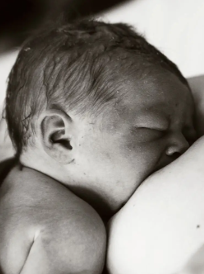

THE WELLCOME OLFACTION PROJECT

Breastfeeding is vital for infant health and mother–baby bonding, but many families struggle to establish it successfully. As a result, exclusive breastfeeding rates remain low worldwide.
In most mammals, smell plays a key role in helping newborns find and attach to the breast, yet this mechanism has been largely overlooked in humans. This project will investigate how maternal and infant odors influence breastfeeding,
how these signals affect behaviour and physiology, and how cultural practices may support or disrupt them. By working with healthcare professionals and families,
we aim to develop practical tools and guidance that make breastfeeding easier and more successful.
DEVELOPPING PORTABLE METHODS FOR CHEMICAL ANALYSES IN FIELD CONDITIONS

Since 2017 I have been helping to develop a methodology for the use of the
PerkinElmer Torion® portable gas chromatograph-mass spectrometer (GC-MS) in the field. This miniaturized GC-MS instrument was originally developed for screening specific volatiles in the fields of environmental science, food manufacturing and chemical warfare, but could prove useful to examine in situ wild animal scents.
Our applications have so far included:
- Differentiating volatile organic compounds from scent-gland secretions of wild callitrichids
- Investigating chemical cues of reproduction status in mice and primates
- Exploring changes in tropical fruit odor in relation to their coloration and ripeness, and their use as primate food resource
SCENT-MARKING BEHAVIOR AND SEMIOCHEMISTRY IN NEOTROPICAL PRIMATES

Callitrichids (marmosets and tamarins) constitute a good model for the study of olfactory communication, as they make use of a range of odour signals. Callitrichids conspicuously deposit odorous secretions, produced by specialized scent-glands, on branches in their environment, a behaviour called scent-marking. I investigated how environmental, social, and reproductive aspects influence patterns of scent-marking behavior in
callitrichids, as well as the chemical composition of scent-gland secretions and urine used to convey chemosignals. My results suggest that chemosignaling plays an important role in the advertisement of identity, reproductive status and dominance in this taxon. My study provides knowledge of mammalian olfactory communication systems, applicable to captive husbandry practices, including conservation
breeding programs of rare species.
Download PhD thesis
ARU Behavioural Ecology Research Group